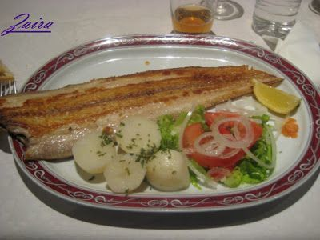
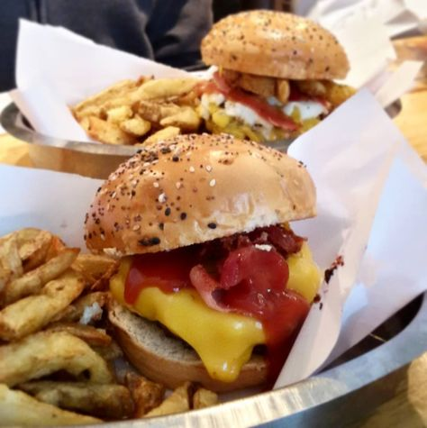

31 recetas rápidas y fáciles para no complicarse la vida en un mes
 El Español
Editar perfil Cerrar sesión Zona Ñ La Edición
Cocinillas
Conoce nuestras newslettersCuenta de usuario
Iniciar sesión / RegistroEditar perfil Cerrar sesión
Editar perfil Cerrar sesión Recetas Carne Pescado y marisco Postres Ensaladas Verduras Pasta y arroz Salsas Sopas y cremas Aprende a cocinar Actualidad gastronómica Restaurantes Vinos Opinión
Premium
Suscríbete Zona Ñ La Edición App iOS App androidServicios
El Tiempo Hemeroteca Temas Newsletters IdealistaEl León de El Español Publicaciones S.A.
Recetas Carne Pescado y marisco Postres Ensaladas Verduras Pasta y arroz Salsas Sopas y cremas Aprende a cocinar Actualidad gastronómica Restaurantes Vinos Opinión31 recetas rápidas y fáciles imprescindibles para comer rico y sano
Recetas
31 recetas rápidas y fáciles para no complicarse la vida en un mes
Os proponemos 31 recetas sencillas para no complicarse en la cocina, pero sin dejar de comer sano y riquísimo. Toma nota de todas y organiza tu mes de comidas y cenas.
29 enero, 2021 10:52 Menú Recetas Rápidas Mer BonillaNoticias relacionadas
7 recetas internacionales para el menú diario. Día 1: China Recetas rápidas de verduras: Día 7 de menú sano 6 recetas sanas con verduras: Día 6 de menú sano 7 recetas de fiesta con verduras: Día 5 de menú sano y románticoEn España nos gusta comer bien, y como cada mes nos enfrentamos a organizar nuestras comidas y cenas. Si no es suficiente con estas 30 recetas rápidas para cocinar con lo que tienes en casa o te cansaste del pollo con estas 30 recetas de pollo fáciles que siempre salen bien , no te preocupes porque te lo ponemos muy fácil porque aquí tienes 31 recetas rápidas y fáciles para hacerte la vida mucho más sencilla.
Comer bien y organizarse para no perder tiempo es totalmente compatible con disfrutar y comer sano. Te toca abrir la nevera, pensar en qué preparar sin perder demasiado tiempo y no te viene nada a la cabeza. A todos nos ha pasado porque no teníamos a mano estos 30 menús que se preparan en menos de 30 minutos .
Por eso hoy os he preparado una lista con recetas rápidas para no complicarse la vida en un mes , que así me servirá a mí de referencia para cuando me quede sin ideas y, seguro que a vosotros también.
31 recetas rápidas y sencillas para todo el mes
Carnes blancas, pescado, huevos, verduras y alguna propuesta un poco más “especial” para esos días en lo que nos apetezca darnos un capricho. Las recetas rápidas imprescindibles que necesitas para comer rico y sano todo el mes.
Risotto de calabaza
risotto de calabaza
Los risottos con su textura cremosa son la mar de reconfortantes a la hora de cenar y este con calabaza no puede ser más adecuado para el otoño. La receta rápida por excelencia explicada paso a paso.
Macarrones con queso en taza al microondas
Macarrones con queso en taza
A mí lo que más pereza me da a la hora de preparar la cena para mí sola es lo de la limpieza posterior, sobre todo ahora que no tengo lavavajillas , por eso, recetas como esta que se pueden preparar en el mismo recipiente en el que luego te las comes me parecen lo más. Unos macarrones con queso que se preparan en menos de 10 minutos y ensuciando solo una taza o bol.
Salmón al horno con bacon y cebolla caramelizada
Salmón al horno con bacon
Los ácidos grasos del salmón tienen un efecto beneficioso a la hora de contrarrestar el estrés , por lo que es un pescado que nos puede venir bien a la hora de la cena. En esta ocasión al horno con bacon y cebolla , aunque el bacon podemos cambiarlo por jamón serrano y hacer la receta más ligera. Aquí os cuento cómo se prepara.
Huevos al plato en 4 minutos
huevos-flamenca-13
Estos huevos al plato o a la flamenca son otra de mis cenas rápidas por excelencia, manchan poco y se hacen volando en el microondas tal como os enseñé en la receta de huevos al plato paso a paso .
Sándwich Vips Club
VipsClubSandwich_19 (1024x660)
Otra de mis favoritas para esas noches en las que aparece visita para ver una peli o el partido de fútbol de rigor es esta versión casera del Sandwich Club como el del Vips al que muchas veces, por hacerlo más ligero, le elimino el bacon.
Pastel de verduras
Pastel de verduras rápido
Otra cena que me encanta y que suelo preparar por partida doble para que me quede para el día siguiente es este pastel de verduras , que primero se cocinan en la sartén y luego se termina de hacer en el microondas.
Perritos calientes
hot-dogs-02
¿Y por qué no un perrito caliente para cenar? En este artículo tenéis 40 recetas distintas para elegir la que más os guste o la que más se adapte a lo que tengáis en ese momento por la nevera.
Tartar de tomate y jamón con pechuga de pollo a la plancha
tartar-tomate-04
La socorrida pechuga de pollo a la plancha es un clásico en las cenas de los que vamos con prisa -o pereza- pero intentamos cuidarnos, así que para no aburrirnos lo mejor es acompañarla de una guarnición ligera, sabrosa y colorida como este tartar de tomate y jamón que os enseñamos a preparar aquí.
Merluza rellena de verduras en papillote
Merluza rellena en papillote
Otra sencillísima, sanísima y sin ensuciar casi nada. Una cola de merluza rellena de jamón y verduritas en papillote que aquí podéis ver cómo se prepara.
Pollo al limón al estilo chino
pollo al limón
Para vencer a la tentación de llamar al chino os propongo esta pechuga de pollo al limón que tardaréis menos en preparar en casa de lo que tarda el chino en aparcar la moto. Aquí la receta de pollo al limón paso a paso .
Sándwich Salmón Club como el del Vips
Sándwich Salmón Club como el del Vips
Y si el Club Vips tradicional os sigue dando pereza, su hermano ligero de salmón es mucho más rápido de preparar y no hace falta encender el fuego, solo la tostadora tal como os contamos en la receta de sandwich club de salmón como el del Vips .
Pechuga de pollo rellena en microondas
pechuga-rellena-micro-00
Fácil y requetebuena casi con cualquier cosa que le metamos dentro para hacer limpieza en la nevera, unos pimientos, un poco de cebolla caramelizada, unos restos de salsa boloñesa o de pisto, el caso es enrollar la pechuga con un poco de queso y algo más y cocinarla en el microondas tal y como os explico en la receta de pechuga de pollo rellena .
Tortilla francesa en un minuto
Tortilla francesa en un minuto 0
En mi plato me lo guiso, en mi plato me lo como y no tardo ni 5 minutos en cenar con esta tortilla francesa en 1 minuto que es auténtica cocina de emergencia. Aquí os contamos todos los detalles de esta tortilla francesa en un minuto .
Hamburguesas de dieta sin pan
hamburguesas-dieta-sin-pan-00
¿Unas hamburguesas que no nos resulten pesadas antes de dormir? Pues claro que se pueden hacer con este truquito que os contamos en la receta de hamburguesas sin pan para diega .
Pizza en pan de pita con huevo de codorniz
Pizza express pan pita 7
Otra de esas cenas rápidas para el día que se apuntan los colegas a ver la tele en casa, unas pizzas ligeritas que se hacen en un pispás usando como base medio bollo de pan de pita. Buenísimas. Aquí podéis ver la receta de pizza en pan de pita .
Sopa de verduras
Sopa de verduras perfecta
Es quizá la menos rápida de todas, pero se puede hacer trampa, si se prepara el domingo por la tarde, nos durará varios días y solo tendremos que ir calentando, por lo que al final sí entra dentro de las cenas rápidas y reconfortantes para las primeras noches frías del otoño. Aquí os dejo la receta rápida de sopa de verdura .
Sopa de pescado rápida
IMG_8915 SOPA DE PESCADO RÁPIDA, RECETA PARA MICROONDAS 0
Cena rápida y de lujo esta sopa de pescado y marisco que se prepara en el microondas y de la que querréis hacer cantidad para repetir al día siguiente. La receta completa de sopa de pescado rápida aquí.
Pechuga de pollo con salsa de mandarina
MEDALLONES POLLO CON SALSA MANDARINA 10 IMG_1404
Otra idea para darle alegría a la pechuga de pollo a la plancha sin perder demasiado tiempo son estos medallones de pechuga de pollo con mandarina y verduritas. Una delicia que os enseñamos a preparar esta pechuga de pollo con mandarina aquí .
Sándwiches estilo Rodilla
sandwiches
Otra idea perfecta para un día de pereza en el que cenamos solos o acompañados es preparar unos sándwiches con rellenos untables al estilo de los de Rodilla. En este recopilatorio de cómo hacer sándiwches de Rodilla os dejamos varias recetas.
Crema de calabacín y apionabo
calabacin-apionabo-12
También me confieso muy fan de tener unos cuantos túpers de cremas de verduras en el congelador, como esta de calabacín y apionabo que podéis ver en esta receta de crema de calabacín y apinoabo .
Tortilla paisana
tortilla-paisana-00
Una alternativa un poco más equilibrada para esos días en los que podemos tener antojo de tortilla de patata sería esta tortilla paisana con atún y muchas verduritas .
Pescado a la plancha
pescado-plancha-00
Y puestos a no complicarnos, un simple filete de pescado a la plancha con las verduras que haya por la nevera nos puede servir para una cena estupenda. En este post os contamos todos los trucos para hacer pescado a la plancha sin que se rompa ni se pegue .
Fajitas sencillas de salmón, queso y mostaza
fajitas_salmon_queso_mostaza
Las tortillas de trigo también son geniales para preparar cenas rápidas como estas fajitas ligeras de salmón, queso y mostaza que os enseñamos a preparar aquí.
Quesadillas de pollo y verduras
QUESADILLA DE POLLO Y VERDURAS 14
Y otra idea con tortillas de trigo, son estas riquísimas quesadillas de pollo y verduras. Ni pueden ser más fáciles ni estar más ricas. Aquí podéis ver la receta de quesadillas de pollo y verduras .
Tortilla de espinacas y puerros
Tortilla de puerros y espinacas
Y otra tortilla sanota y muy sencilla que se prepara en un momento es la de espinacas con puerro caramelizado. Tan fácil como seguir los pasos que os dejamos en esta receta paso a paso de tortilla de espinacas y puerros .
Sándwich a elegir
sandwich-00
Y por si los sándwiches anteriores no os convencen, en este post os dejamos 30 recetas rápidas diferentes de sándwiches que os servirán de inspiración para preparar el vuestro.
Pollo con salsa de mostaza y vino blanco
Pollo con mostaza y vino blanco
Y otra para cocinar en cantidad suficiente para que sobre para el túper del día siguiente es este pollo con mostaza y vino blanco. Fácil y riquísimo siguiendo las instrucciones que tenéis aquí para hacer el pollo con salsa de mostaza y vino blanco.
Curry de pollo y zanahorias
curry-pollo-zanahoria-00
Otra que también es perfecta para el túper del día siguiente es este curry de pollo con zanahorias, muy sabroso y ligero. Aquí la receta de curry de pollo y zanahorias .
Salmón al horno con cebolla y tomate
salmon_horno_6
Otra que nos encanta es este salmón al horno con cebolla y tomate porque no da ningún trabajo prepararlo y está de chuparse los dedos. La receta rápida de salmón al horno en este enlace .
Pizza en pan de molde con salsa de tomate exprés
Pizza con pan de molde y salsa de tomate exprés 16
Otra idea guay para cuando nos puede el antojo de pizza pero nos mata la falta de tiempo es tirar del pan de molde como base y currarse unas pizzas en pan de molde como estas .
Pescado Thai con Pak Choi
pescadothai
Y para terminar esta lista de cenas rápidas, un pescado con toques exóticos y facilísimo de hacer siguiendo los pasos os dábamos en esta receta de pescado thai con Pak Choi .
Más en Recetas
Tacos dorados de sardina, receta mexicana para la noche de San Juan
Falafel de boniato con salsa tarator de zanahoria, un aperitivo vegano
Coca de San Juan, receta fácil del riquísimo dulce con el que empieza el verano
Berberechos al vapor con aliño oriental, una receta fácil y ligera
Portada
Siguiente
Heineken ha invertido más de 150 millones en ayudas a la hostelería
AnteriorRecetas de perruneo
Siguiente contacto Publicidad Branded Eventos Quiénes somos Política de Privacidad Condiciones de Compra Contactar © 2021 El León de El Español Publicaciones S.A. Aviso Legal Política de cookies cerrar